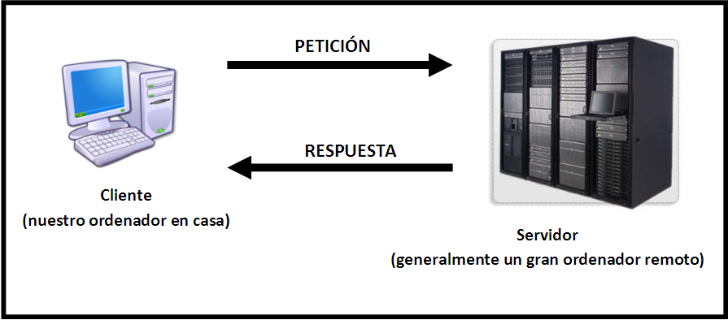

Introduccion
Javascript es un lenguaje de programación que se utiliza principalmente para desarrollar aplicaciones web interactivas. Se ejecuta en el lado del cliente, es decir, en el navegador web, y se utiliza para agregar interactividad a las páginas web y mejorar la experiencia del usuario.

Entre las características más importantes de Javascript se incluyen:
Algunas de las aplicaciones más comunes de Javascript son la validación de formularios, la creación de animaciones y efectos visuales, la manipulación del DOM (Document Object Model), el desarrollo de juegos en línea, la creación de aplicaciones web de una sola página y mucho más.
En resumen, Javascript es un lenguaje de programación muy versátil y poderoso que se ha convertido en un componente esencial para el desarrollo de aplicaciones web modernas e interactivas.
Historia
La historia de JavaScript se remonta a principios de la década de 1990, cuando el navegador Mosaic comenzó a popularizarse en la web. En ese momento, los sitios web eran estáticos y no tenían interactividad.
Brendan Eich, un programador de Netscape Communications Corporation, fue contratado en 1995 para crear un lenguaje de programación que pudiera agregar interactividad a los sitios web. Eich desarrolló el lenguaje en solo 10 días y lo llamó inicialmente Mocha. Luego se llamó LiveScript y finalmente se cambió el nombre a JavaScript para capitalizar la popularidad de Java en ese momento.
En septiembre de 1995, JavaScript se lanzó con Netscape Navigator 2.0 y rápidamente se convirtió en una de las herramientas más importantes para los desarrolladores web. Microsoft también lanzó su propia versión de JavaScript llamada JScript para Internet Explorer.
En 1997, Netscape entregó el control de JavaScript a la Organización de Estándares Web (W3C) para que fuera estandarizado. Esto llevó a la creación de ECMAScript, que es la especificación oficial de JavaScript. ECMAScript 1 se lanzó en 1997, seguido de ECMAScript 2 en 1998 y ECMAScript 3 en 1999.
JavaScript continuó evolucionando y mejorando, y en 2009, se lanzó ECMAScript 5 con nuevas características como getters y setters y soporte para JSON. En 2015, se lanzó ECMAScript 6, que introdujo importantes mejoras en el lenguaje, incluyendo nuevas características como clases y módulos.
Hoy en día, JavaScript es el lenguaje de programación más popular en el mundo y se utiliza en casi todas las páginas web modernas, así como en aplicaciones web, aplicaciones móviles y aplicaciones de escritorio.
JavaScript del lado del cliente
JavaScript del lado del cliente es la forma en que se utiliza JavaScript en la programación web para interactuar con la interfaz de usuario de una página web en el navegador del usuario. Es decir, el código de JavaScript se ejecuta en el navegador del usuario, no en el servidor web.
JavaScript del lado del cliente se utiliza para mejorar la interactividad de una página web y permitir que los usuarios realicen acciones como enviar formularios, hacer clic en botones y menús, realizar validaciones de entrada y más. Algunos ejemplos de uso común de JavaScript en el lado del cliente son:
- Validación de formularios: se puede utilizar JavaScript para asegurarse de que los usuarios ingresen datos válidos en los formularios de una página web antes de enviarlos al servidor.
- Efectos visuales: se pueden utilizar bibliotecas de JavaScript como jQuery o React para agregar efectos visuales a la página web, como animaciones, deslizamientos y transiciones.
- Comunicación con el servidor: se puede utilizar JavaScript para enviar y recibir datos del servidor web sin tener que recargar la página completa, utilizando la tecnología AJAX.
- Manipulación del DOM: se puede utilizar JavaScript para modificar dinámicamente el contenido y la apariencia de una página web, agregando o eliminando elementos del DOM.
JavaScript del lado del cliente es un componente importante de la programación web moderna, y es una habilidad esencial para los desarrolladores web que desean crear experiencias de usuario dinámicas y atractivas.
Javascript en el lado del servidor
JavaScript del lado del servidor, también conocido como Node.js, es una tecnología que permite a los desarrolladores utilizar JavaScript en el servidor web. Es decir, el código de JavaScript se ejecuta en el servidor, no en el navegador del usuario.
JavaScript del lado del servidor se utiliza para crear aplicaciones web escalables y de alto rendimiento. Algunos ejemplos de uso común de JavaScript en el lado del servidor son:
- Creación de API: se puede utilizar JavaScript en el servidor para crear una API que permita a otras aplicaciones acceder a los datos y servicios de una aplicación web.
- Manipulación de archivos: se puede utilizar JavaScript en el servidor para leer y escribir archivos en el sistema de archivos del servidor.
- Procesamiento de datos: se puede utilizar JavaScript en el servidor para procesar grandes cantidades de datos y realizar operaciones complejas en ellos.
- Realización de tareas programadas: se puede utilizar JavaScript en el servidor para realizar tareas programadas, como enviar correos electrónicos o actualizar bases de datos automáticamente.
JavaScript del lado del servidor es una tecnología cada vez más popular entre los desarrolladores web, especialmente aquellos que ya tienen experiencia con JavaScript del lado del cliente. Al utilizar la misma tecnología en el lado del cliente y del servidor, se pueden crear aplicaciones web más eficientes y coherentes.
Imperativo y estructurado
JavaScript es un lenguaje de programación imperativo, lo que significa que se le dice al programa exactamente qué hacer y cómo hacerlo. También es un lenguaje estructurado, lo que significa que se divide en pequeñas secciones lógicas que son más fáciles de entender y mantener.
Dinámicos
JavaScript es un lenguaje dinámico, lo que significa que el tipo de datos de una variable puede cambiar en tiempo de ejecución. Por ejemplo, una variable puede comenzar como un número y luego convertirse en una cadena de texto más tarde en el programa. Esto hace que JavaScript sea muy flexible y fácil de usar para los desarrolladores.
Funcional
JavaScript también es un lenguaje de programación funcional, lo que significa que se enfoca en la evaluación de funciones matemáticas y evita el cambio de estados y datos. Esto hace que sea más fácil entender cómo funciona el código y reduce la posibilidad de errores. JavaScript también admite funciones de orden superior y clausuras, lo que permite un código más modular y reutilizable.
Prototípico
JavaScript es un lenguaje prototípico, lo que significa que utiliza prototipos para crear objetos y herencia en lugar de clases. En lugar de crear una clase y luego crear objetos a partir de esa clase, en JavaScript, se crean objetos directamente y luego se heredan propiedades y métodos de otros objetos. Esto hace que JavaScript sea más flexible y menos restrictivo que los lenguajes que utilizan clases y herencia.